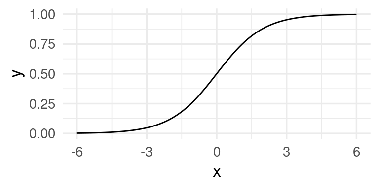
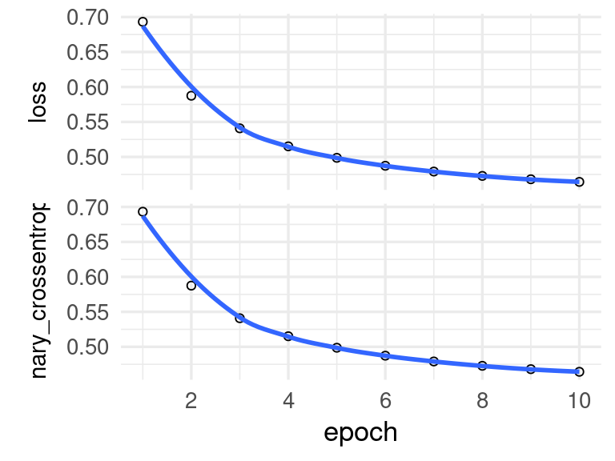

library(tidyverse)
library(tidymodels)
library(gt)
p_1 <- function(x){
ifelse(x < 0.15, 0.95, 0.95 - 0.7 * (x - 0.15))
}
ggplot(tibble(x = seq(0, 1, 0.01)), aes(x = x)) +
stat_function(fun = p_1) +
ylab("Prob al corriente")8 Clasificación y probabilidad
Una variable \(g\) categórica o cualitativa toma valores que no son numéricos. Por ejemplo, si \(g\) denota el estado del contrato de celular de un cliente dentro de un año, podríamos tener \(g\in \{ activo, cancelado\}\).
En un problema de clasificación buscamos predecir una variable respuesta categórica \(g\) en función de otras variables de entrada \(x=(x_1,x_2,\ldots, x_p)\).
Ejemplos
Predecir si un cliente cae en impago de una tarjeta de crédito, de forma que podemos tener \(g=corriente\) o \(g=impago\). Variables de entrada podrían ser \(x_1=\) porcentaje de saldo usado, \(x_2=\) atrasos en los últimos 3 meses, \(x_3=\) edad, etc
En reconocimiento de imágenes quiza tenemos que \(g\) pertenece a un conjunto que típicamente contiene hasta cientos de valores (manzana, árbol, pluma, perro, coche, persona, cara, etc.). Las \(x_j\) son valores de pixeles de la imagen para tres canales (rojo, verde y azul). Si las imágenes son de 100x100, tendríamos 30,000 variables de entrada.
8.1 ¿Qué estimar en problemas de clasificación?
Cuando clasificamos según entradas \(x\) en una clase, podemos estar más o menos seguros de la clasificación. Por ejemplo: puede ser que la la decisión es clasificar a un cliente dado como “impago en los próximos tres meses”. La incertidumbe está en que quizá la probabilidad de impago es de 95%, pero existe una probabilidad de 5% de que el cliente se mantenga al corriente. Esto es muy diferente a un cliente con probabilidades respectivas de 60% y 40%. En general, cualquier tipo de análisis costo-beneficio que utilice el modelo debe intentar tomar en cuenta que estos dos clientes son muy diferentes.
Consideramos primero un problema de clasificación binaria, y denotamos por \(y\in \{0,1\}\) la indicadora de una de las dos de las categorías. Sea \(p(x)\) una función que mide qué tan seguros estamos que la observación es de clase \(y=1\). Supondremos que \(p(x)\) es una función que toma valores entre \(0\) y \(1\).
Ahora necesitamos una función de pérdida \(L(y, p)\) que evalúa el error cuando nuestra medida de confianza es \(p\) y la clase observada es \(y\). Podemos usar por ejemplo la pérdida cuadrática:
\[L(y, p) = (y - p)^2,\] que también se llama pérdida de Brier en este contexto. Igual que en regresión, dada una población, podemos encontrar la función \(p^*(x)\) que minimiza la pérdida esperada sobre toda la población. En este caso, \[p^*(x) = E(y|x) = P(y=1|x)\] es decir, la verdadera probabilidad de que la clase sea 1 es la función \(p^*(x)\) que minimiza la pérdida cuadrática. Si usamos por ejemplo la pérdida absoluta, entonces la solucion es tomar como \(p^* (x) = 1\) si \(P(y= 1|x) > 0.5\), y \(p^*(x)= 0\) en otro caso (muestra por qué).
Aunque utilizaremos otras pérdidas mejor adaptadas para el problema del clasificación, por el momento notemos que igual que planteamos el problema aprendizaje en regresión como un problema de aproximar una curva \(f^*(x)\) óptima con una función \(\hat{f}(x)\) construida a partir de datos, igualmente podemos plantear el problema de clasificación binaria como sigue:
- Buscamos algoritmos \({\mathcal L} \to \hat{p}(x)\) tal que \(\hat{p}(x)\) está cercana a la probabilidad de clase \(p^* (x) = P(y=1 |x)\).
- Los argumentos de error irreducible, sesgo y variabilidad aplican también en esta situación bajo la pérdida de Brier y puede darse un argumento para cada clase (considerando \(y_k - \hat{p}_k(x)\) como residual). En este caso, el error irreducible proviene del hecho de que \(p^*_k(x)\) no necesariamente toman solo los valores 0 o 1, y dadas las \(x\), existe incertidumbre en la clase que vamos a observar.
Ejemplo
(Impago de tarjetas de crédito) Supongamos que \(x=\) porcentaje del crédito máximo usado, y \(y\in\{0, 1\}\), donde \(1\) corresponde al corriente y \(0\) representa impago. Las probabilidades condicionales de clase para la clase al corriente podrían ser, por ejemplo:
- \(p(x) = P(y=1|x) =0.95\) si \(x < 0.15\)
- \(p(x) = P(y=1|x) = 0.95 - 0.7(x - 0.15)\) si \(x>=0.15\)
Estas son probabilidades y no determinan el resultado, pues hay otras variables que influyen en que un cliente permanezca al corriente o no en sus pagos más allá de información contenida en el porcentaje de crédito usado. Nótese que estas probabilidades son diferentes a las no condicionadas, por ejempo, podríamos tener que a total \(P(y=1)=0.83\)
8.2 Estimación de probabilidades de clase
¿Cómo estimamos ahora las probabilidades de clase a partir de una muestra de entrenamiento? Veremos por ahora dos métodos: k-vecinos más cercanos y regresión logística.
Ejemplo
Vamos a generar unos datos con el modelo simple del ejemplo anterior:
simular_impago <- function(n = 500){
# suponemos que los valores de x están concentrados en valores bajos,
# quizá la manera en que los créditos son otorgados
clases <- c("al_corriente", "impago")
x <- pmin(rexp(n, 100 / 40), 1)
# las probabilidades de estar al corriente:
prob <- p_1(x)
# finalmente, simulamos cuáles clientes siguen al corriente y cuales no:
g <- map_chr(1:length(x), ~ sample(clases, size = 1, prob = c(prob[.x], 1- prob[.x])))
g <- factor(g, levels = c("al_corriente", "impago"))
datos <- tibble(x = x, p_1 = prob, g = g) |>
mutate(y = ifelse(g == "al_corriente", 1, 0))
datos
}
set.seed(193)
dat_ent <- simular_impago() |> select(x, g, y)
dat_ent |> sample_n(20)# A tibble: 20 × 3
x g y
<dbl> <fct> <dbl>
1 0.118 al_corriente 1
2 0.109 al_corriente 1
3 0.444 al_corriente 1
4 0.153 al_corriente 1
5 0.100 al_corriente 1
6 0.0109 al_corriente 1
7 0.216 al_corriente 1
8 1 impago 0
9 0.0846 al_corriente 1
10 0.144 al_corriente 1
11 0.377 impago 0
12 0.0908 al_corriente 1
13 0.128 al_corriente 1
14 0.00262 al_corriente 1
15 0.411 al_corriente 1
16 0.545 al_corriente 1
17 0.402 al_corriente 1
18 0.0544 al_corriente 1
19 0.00265 al_corriente 1
20 0.0927 al_corriente 1Como este problema es de dos clases, podemos graficar como sigue (agregamos variación artificial en \(y\) para evitar traslape de los puntos):
graf_1 <- ggplot(dat_ent, aes(x = x)) +
geom_jitter(aes(colour = factor(g), y = y),
width=0.02, height=0.1) + ylab("") +
labs(colour = "Clase")
graf_1 8.3 k-vecinos más cercanos
Para usar \(k\)-vecinos más cercanos para estimar la probabilidades de clase para cada \(x\), podemos tomar una vecindad de la \(x\) donde queremos predecir, y tomar el siguiente promedio:
\[\hat{p}(x) = \frac{1}{k}\sum_{x^{(i)} \in N_k(x)} y^{(i)},\]
que es la proporción de unos en una vecindad \(N_k(x)\) de \(x\).
Ejemplo
Vamos a intentar estimar la probabilidad condicional de estar al corriente usando k vecinos más cercanos:
vmc_modelo <- nearest_neighbor(neighbors = 100, weight_func = "gaussian") |>
set_engine("kknn") |>
set_mode("classification")
ajuste_vmc <- vmc_modelo |> fit(g ~ x, dat_ent)
# para graficar:
graf_kvmc <- tibble(x = seq(0, 1, 0.01))
graf_kvmc <- predict(ajuste_vmc, graf_kvmc, type = "prob") |>
bind_cols(graf_kvmc) |>
select(x, .pred_al_corriente)
graf_kvmc |> head()# A tibble: 6 × 2
x .pred_al_corriente
<dbl> <dbl>
1 0 0.947
2 0.01 0.946
3 0.02 0.948
4 0.03 0.954
5 0.04 0.973
6 0.05 0.985Y la curva roja da nuestra estimación de probabilidad de impago para cada $x4:
graf_verdadero <- tibble(x = seq(0, 1, 0.01), p_1 = p_1(x))
graf_2 <- graf_1 +
geom_line(data = graf_kvmc, aes(y = .pred_al_corriente), colour = 'red', size=1.2) +
geom_line(data = graf_verdadero, aes(y = p_1)) +
ylab('Prob al corriente') + xlab('% crédito usado') Warning: Using `size` aesthetic for lines was deprecated in ggplot2 3.4.0.
ℹ Please use `linewidth` instead.graf_2Ahora podríamos usar una muestra de prueba para evaluar nuestra estimación, pues no tenemos la curva negra óptima para comparar.
8.4 Ejemplo: diabetes
Consideremos datos de diabetes en mujeres Pima:
A population of women who were at least 21 years old, of Pima Indian heritage and living near Phoenix, Arizona, was tested for diabetes according to World Health Organization criteria. The data were collected by the US National Institute of Diabetes and Digestive and Kidney Diseases. We used the 532 complete records after dropping the (mainly missing) data on serum insulin.
- npreg number of pregnancies.
- glu plasma glucose concentration in an oral glucose tolerance test.
- bp diastolic blood pressure (mm Hg).
- skin triceps skin fold thickness (mm).
- bmi body mass index (weight in kg/(height in m)^2).
- ped diabetes pedigree function.
- age age in years.
- type Yes or No, for diabetic according to WHO criteria.
diabetes_ent <- as_tibble(MASS::Pima.tr)
diabetes_pr <- as_tibble(MASS::Pima.te)
diabetes_ent# A tibble: 200 × 8
npreg glu bp skin bmi ped age type
<int> <int> <int> <int> <dbl> <dbl> <int> <fct>
1 5 86 68 28 30.2 0.364 24 No
2 7 195 70 33 25.1 0.163 55 Yes
3 5 77 82 41 35.8 0.156 35 No
4 0 165 76 43 47.9 0.259 26 No
5 0 107 60 25 26.4 0.133 23 No
6 5 97 76 27 35.6 0.378 52 Yes
7 3 83 58 31 34.3 0.336 25 No
8 1 193 50 16 25.9 0.655 24 No
9 3 142 80 15 32.4 0.2 63 No
10 2 128 78 37 43.3 1.22 31 Yes
# ℹ 190 more rowsIntentaremos predecir diabetes dependiendo del una medición de glucosa en la sangre:
ggplot(diabetes_ent, aes(x = glu, y= ifelse(type=='Yes', 1, 0), colour = type)) +
geom_jitter(height = 0.05)Usamos \(30\) vecinos más cercanos para estimar \(p(x)\):
graf_data <- tibble(glu = seq(50, 200, 1))
# ajustar modelo
ajuste_vmc_diabetes <- vmc_modelo |> set_args(neighbors = 50) |>
fit(type ~ glu, diabetes_ent)
# graficar
graf_data <- predict(ajuste_vmc_diabetes, graf_data, type = "prob") |>
bind_cols(graf_data) |>
select(glu, .pred_Yes)
ggplot(diabetes_ent, aes(x = glu)) +
geom_point(aes(y = as.numeric(type == "Yes"), colour = type)) +
geom_line(data = graf_data, aes(y = .pred_Yes)) +
ylab('Probabilidad diabetes')Finalmente, evaluamos por ejemplo con la pérdida de Brier:
preds_tbl <- predict(ajuste_vmc_diabetes, diabetes_pr, type = "prob") |>
bind_cols(diabetes_pr |> select(type)) |>
mutate(y = as.numeric(type == "Yes"))
preds_tbl |> head()# A tibble: 6 × 4
.pred_No .pred_Yes type y
<dbl> <dbl> <fct> <dbl>
1 0.482 0.518 Yes 1
2 0.921 0.0793 No 0
3 0.902 0.0980 No 0
4 0.925 0.0752 Yes 1
5 0.250 0.750 Yes 1
6 0.342 0.658 Yes 1preds_tbl |>
rmse(truth = y, estimate = .pred_Yes)# A tibble: 1 × 3
.metric .estimator .estimate
<chr> <chr> <dbl>
1 rmse standard 0.405Podemos comparar este error con la predicción que haríamos usando la proporción de unos en los datos, por ejemplo:
promedio_ent <- diabetes_ent |> mutate(y = type == "Yes") |>
pull(y) |> mean()
preds_tbl |> mutate(promedio = promedio_ent) |>
rmse(truth = y, estimate = promedio)# A tibble: 1 × 3
.metric .estimator .estimate
<chr> <chr> <dbl>
1 rmse standard 0.470Finalmente, probemos usando todas las variables, teniendo cuidado de estandarizar las variables de entranda:
receta_diabetes <- recipe(type ~ ., diabetes_ent) |>
step_normalize(all_predictors())
modelo_vmc <- vmc_modelo |>
set_args(neighbors = 50)
flujo_vmc_diabetes <- workflow() |>
add_recipe(receta_diabetes) |>
add_model(modelo_vmc)
preds_todas <- fit(flujo_vmc_diabetes, diabetes_ent) |>
predict(diabetes_pr, type = "prob") |>
bind_cols(diabetes_pr |> select(type)) |>
mutate(y = as.numeric(type == "Yes"))
preds_todas |>
rmse(truth = y, estimate = .pred_Yes)# A tibble: 1 × 3
.metric .estimator .estimate
<chr> <chr> <dbl>
1 rmse standard 0.3968.5 Pérdida logarítmica
La pérdida de Brier es una medida útil para evaluar modelos, pero tiene algunos defectos cuando se usa en el ajuste de probabilidades de clase. Uno importante es que es penaliza relativamente poco a errores donde predecimos por ejemplo \(\hat{p}_1(x) = 0.0001\), y resulta que observamos \(g=1\). La penalización es similar que cuando \(\hat{p}_1(x) = 0.01\), pero se puede argumentar que el primero de los errores es considerablemente más grave que el segundo.
Consideremos entonces que tenemos una estimación \(\hat{p}_g(x)\) de las probabilidad de clase. Supongamos que observamos ahora \((x, g)\) (la clase verdadera es \(g\)).
- Si \(\hat{p}_{g}(x)\) es muy cercana a uno, deberíamos penalizar poco, pues dimos probabilidad alta a la clase \(g\) que ocurrió.
- Si \(\hat{p}_{g}(x)\) es chica, deberíamos penalizar más, pues dimos probabilidad baja a observar la clase \(g\).
- Si \(\hat{p}_{g}(x)\) es muy cercana a cero, y observamos \(g\), deberíamos hacer una penalización muy alta (convergiendo a \(\infty\), pues no es aceptable que sucedan eventos con probabilidad estimada extremadamente baja).
Quisiéramos encontrar una función \(h\) apropiada, de forma que la pérdida al observar \((x, g)\) sea \[s(\hat{p}_{g}(x)),\] y que cumpla con los puntos arriba señalados. Entonces tenemos que
- \(s\) debe ser una función continua y decreciente en \([0,1]\)
- Podemos poner \(s(1)=0\) (no hay pérdida si ocurre algo con que dijimos tiene probabilidad 1)
- \(s(p)\) debe ser muy grande is \(p\) es muy chica.
Una opción analíticamente conveniente es la pérdida logarítmica: \[s(p) = - \log(p)\]
perdidas_tbl <- tibble(p = seq(0.01, 1, 0.001)) |>
mutate(logarítmica = - log(p), brier = 2 * (1 - p)^2) |>
pivot_longer(cols = logarítmica:brier, names_to = "tipo", values_to = "perdida")
ggplot(perdidas_tbl, aes(x = p, y = perdida, colour = tipo)) +
geom_line(size = 1.1)Así que la pérdida para un caso con entradas \(x\) y clase \(g\) es
\[-\log \hat{p}_g (x)\] Se puede demostrar que, igual que la pérdida de Brier, si queremos minimizar la pérdida logarítmica sobre toda la población, la solución está dada por las verdaderas probabilidades de clase
\[p^*(x) = E(y|x) = P(y = 1|x).\]
De modo que la función que queremos estimar es la misma en ambos casos. La pérdida de Brier sin embargo, es menos sensible a errores en los extremos de la escala de probabilidad, y puede producir estimaciones distintas cuando se usa en entrenamiento.
Observaciones:
La pérdida logarítmica también se llama devianza binomial o devianza multinomial en otros lugares, usualmente multipicada por 2 (lo cual no cambia sus propiedades).
Una razón importante para usar la pérdida logarítmica como el objetivo a minimizar es que equivale a la estimación por máxima verosimilitud (intenta demostrarlo).
No es fácil interpretar la pérdida logarítmica, pero es útil para ajustar y comparar modelos. Veremos otras medidas más fáciles de interpretar más adelante.
Compara la siguiente definición con la que vimos para modelos de regresión:
Pérdida logarítmica
Sea \[{\mathcal L}=\{ (x^{(1)},g^{(1)}),(x^{(2)},g^{(2)}), \ldots, (x^{(N)}, g^{(N)}) \}\] una muestra de entrenamiento, a partir de las cuales construimos mediante un algoritmo funciones estimadas \(\hat{p}_{g} (x)\) para \(g=1,\ldots, K\). La pérdida logarítmica de entrenamiento está dada por \[\begin{equation} \overline{err} = - \frac{1}{N}\sum_{i=1}^N log(\hat{p}_{g^{(i)}} (x^{(i)})) \end {equation}\] Sea \[{\mathcal T}=\{ (\mathbf{x}^{(1)},\mathbf{g}^{(1)}),(\mathbf{x}^{(2)},\mathbf{g}^{(2)}), \ldots, (\mathbf{x}^{(m)}, \mathbf{g}^{(m)}) \}\] una muestra de prueba. La pérdida logarítmica de prueba es \[\begin{equation} \hat{Err} = - \frac{1}{m}\sum_{i=1}^m log(\hat{p}_{\mathbf{g}^{(i)}} (\mathbf{x}^{(i)})) \end {equation}\] que es una estimación de la devianza de predicción \[-E\left [ \log(\hat{p}_g(x)) \right ],\] donde el promedia se toma sobre todos los valores \((\mathbf{x}, \mathbf{g})\) de la población.
Ejemplo
Regresamos a nuestros ejemplo simulado de impago de tarjetas de crédito. Primero calculamos la pérdida logarítmica de entrenamiento
s <- \(x) -log(x)
dat_log_loss <- ajuste_vmc |>
predict(dat_ent, type = "prob") |>
bind_cols(dat_ent) |>
select(x, g, .pred_impago, .pred_al_corriente)
dat_log_loss <- dat_log_loss |>
mutate(hat_p_g = ifelse(g=="impago", .pred_impago, .pred_al_corriente))Nótese que dependiendo de qué clase observamos (columna \(g\)), extraemos la probabilidad correspondiente a la columna hat_p_g:
set.seed(125)
dat_log_loss |> sample_n(20) |> gt()| x | g | .pred_impago | .pred_al_corriente | hat_p_g |
|---|---|---|---|---|
| 0.19852287 | al_corriente | 0.14038901 | 0.8596110 | 0.85961099 |
| 0.67376004 | al_corriente | 0.50190033 | 0.4980997 | 0.49809967 |
| 0.05182251 | al_corriente | 0.01304586 | 0.9869541 | 0.98695414 |
| 0.78516363 | al_corriente | 0.53011453 | 0.4698855 | 0.46988547 |
| 0.51357278 | al_corriente | 0.32252677 | 0.6774732 | 0.67747323 |
| 0.11636840 | al_corriente | 0.08958375 | 0.9104162 | 0.91041625 |
| 0.50414410 | impago | 0.30908738 | 0.6909126 | 0.30908738 |
| 0.68843401 | impago | 0.50778339 | 0.4922166 | 0.50778339 |
| 0.74915741 | impago | 0.52349703 | 0.4765030 | 0.52349703 |
| 0.15106073 | al_corriente | 0.06850996 | 0.9314900 | 0.93149004 |
| 1.00000000 | impago | 0.57659107 | 0.4234089 | 0.57659107 |
| 0.07148778 | al_corriente | 0.02543890 | 0.9745611 | 0.97456110 |
| 0.08934583 | al_corriente | 0.06888669 | 0.9311133 | 0.93111331 |
| 0.32848650 | al_corriente | 0.21323646 | 0.7867635 | 0.78676354 |
| 0.20386137 | al_corriente | 0.14978783 | 0.8502122 | 0.85021217 |
| 0.67871350 | impago | 0.50258385 | 0.4974162 | 0.50258385 |
| 0.19050443 | al_corriente | 0.12406591 | 0.8759341 | 0.87593409 |
| 0.18182276 | al_corriente | 0.10562898 | 0.8943710 | 0.89437102 |
| 0.26726265 | al_corriente | 0.16922039 | 0.8307796 | 0.83077961 |
| 0.02035980 | impago | 0.05230648 | 0.9476935 | 0.05230648 |
Ahora aplicamos la función \(s\) que describimos arriba, y promediamos sobre el conjunto de entrenamiento:
dat_log_loss <- dat_log_loss |> mutate(dev = s(hat_p_g))
dat_log_loss |> sample_n(20) |> gt()| x | g | .pred_impago | .pred_al_corriente | hat_p_g | dev |
|---|---|---|---|---|---|
| 0.32253044 | al_corriente | 0.21043820 | 0.7895618 | 0.7895618 | 0.23627717 |
| 0.10851963 | al_corriente | 0.09528056 | 0.9047194 | 0.9047194 | 0.10013039 |
| 0.11801945 | al_corriente | 0.08830654 | 0.9116935 | 0.9116935 | 0.09245146 |
| 1.00000000 | impago | 0.57659107 | 0.4234089 | 0.5765911 | 0.55062199 |
| 0.11771241 | al_corriente | 0.08871380 | 0.9112862 | 0.9112862 | 0.09289827 |
| 0.03576024 | al_corriente | 0.03671995 | 0.9632800 | 0.9632800 | 0.03741110 |
| 0.02947193 | al_corriente | 0.04638861 | 0.9536114 | 0.9536114 | 0.04749904 |
| 0.06708467 | al_corriente | 0.01865320 | 0.9813468 | 0.9813468 | 0.01882937 |
| 0.52670471 | al_corriente | 0.34240787 | 0.6575921 | 0.6575921 | 0.41917040 |
| 0.48074458 | impago | 0.27713415 | 0.7228659 | 0.2771341 | 1.28325360 |
| 0.75320749 | impago | 0.52403777 | 0.4759622 | 0.5240378 | 0.64619152 |
| 0.28789759 | al_corriente | 0.18845940 | 0.8115406 | 0.8115406 | 0.20882086 |
| 0.50724729 | al_corriente | 0.31267931 | 0.6873207 | 0.6873207 | 0.37495430 |
| 0.65972691 | impago | 0.49530580 | 0.5046942 | 0.4953058 | 0.70257994 |
| 1.00000000 | al_corriente | 0.57659107 | 0.4234089 | 0.4234089 | 0.85941682 |
| 0.03525545 | al_corriente | 0.03771126 | 0.9622887 | 0.9622887 | 0.03844073 |
| 0.53221265 | impago | 0.35093998 | 0.6490600 | 0.3509400 | 1.04714008 |
| 0.12557127 | al_corriente | 0.08047375 | 0.9195263 | 0.9195263 | 0.08389669 |
| 0.12686269 | al_corriente | 0.07830790 | 0.9216921 | 0.9216921 | 0.08154406 |
| 0.11702054 | al_corriente | 0.08882314 | 0.9111769 | 0.9111769 | 0.09301826 |
dat_log_loss |> ungroup() |> summarise(lloss_entrena = mean(dev))# A tibble: 1 × 1
lloss_entrena
<dbl>
1 0.421Que también podemos calcular como sigue:
dat_log_loss |> mn_log_loss(g, .pred_al_corriente) |>
mutate(.estimate = .estimate )# A tibble: 1 × 3
.metric .estimator .estimate
<chr> <chr> <dbl>
1 mn_log_loss binary 0.421Recordemos que la devianza de entrenamiento no es la cantidad que evalúa el desempeño del modelo. Hagamos el cálculo entonces para una muestra de prueba:
set.seed(1213)
dat_prueba <- simular_impago(n = 5000) |> select(x, g)
## calcular para muestra de prueba
dat_log_loss_prueba <- ajuste_vmc |>
predict(dat_prueba, type = "prob") |>
bind_cols(dat_prueba) |>
select(x, g, .pred_impago, .pred_al_corriente)
dat_log_loss_prueba <- dat_log_loss_prueba |>
mutate(hat_p_g = ifelse(g == "al_corriente", .pred_al_corriente, .pred_impago))
dat_log_loss_prueba <- dat_log_loss_prueba |> mutate(log_loss = s(hat_p_g))
dat_log_loss_prueba |> ungroup() |> summarise(log_loss_prueba = mean(log_loss))# A tibble: 1 × 1
log_loss_prueba
<dbl>
1 0.4348.6 Clasificación multinomial
Cuando tenemos sólo dos clases (clasificación binaria), basta con estimar una probabilidad de clase, pues la segunda es complemento de la primera. Para tres o más clases introducimos notación adicional:
Consideramos un problema donde \(g\) puede ser una de \(K\) clases posibles. Tenemos \(K\) probabilidades de clase \(p(x) = (p_1(x), p_2(x), \ldots p_K(x))\) que deben sumar 1 (de forma que una de ellas es redundante dadas las otras).
Definimos \((y_1,y_2, \ldots, y_k)\) variables indicadoras de las categorías, donde \(y_k = 1\) cuando \(g = k\) y \(y_k = 0\) en otro caso.
La pérdida de Brier en este caso se puede definir como
\[L(g, p(x)) = \sum_{k=1}^K (y_k - p_k(x))^2 = (1 - p_g(x))^2 + \sum_{k\neq g} (p_k(x))^2\] Esto quiere decir que el score de Brier es chico cuando \(p_g(x)\), la probabilidad de la clase \(g\), es cercana a uno y el resto de las probabilidades son cercanas a 0 (verifica que esta definición es equivalente para dos clases según la definición mostrada arriba para clasificación binaria). En este caso, la solución teórica que minimiza esta pérdida promediada sobre toda la población es
\[p_k^*(x) = E(y_k | x) = P(g = k| x)\]
Si usamos la pérdida logarítmica, entonces la pérdida es
\[L(g, p(x)) = -\log p_g (x),\] que en nuestra notación con indicadoras se escribe como
\[L(y, p(x)) = -\sum_{k=1}^K y_k\log p_k (x),\]
Ejercicio: escribe las estimaciones de clase de \(k\)-vecinos más cercanos para clasificación multinomial.
8.7 Regresión logística
En \(k\) vecinos más cercanos, intentamos estimar directamente con promedios las probabilidades de clase, sin considerar ninguna estructura. Ahora consideramos modelos más estructurados, definidos por parámetros, e intentaremos ajustarlos minimizando la pérdida logarítmica.
Igual que en regresión lineal, algunos de los modelos más simples que podemos imaginar son modelos lineales. Solo es necesario hacer una adaptación.
Supongamos que nuestra variable respuesta es \(y\), que toma valores 0 o 1.
Ahora queremos definir \(p(x) = p_1(x)\) (probabilidad de que ocurra la clase 1) en términos de un promedio ponderado de las variables de entrada, como en regresión lineal:
\[\beta_0 + \beta_1 x_1 + \beta_2 x_2 + \cdots + \beta_px_p.\]
Sin embargo, observamos que esta expresión puede dar valores negativos o mayores a uno, de forma que no necesariamente puede interpetarse como una probabilidad \(p(x)\). Una de las formas más sencillas de resolver este problema es transformar esta expresión para que necesariamente esté en \([0,1]\) por medio de una función fija \(h\):
\[p_{\beta}(x) = h(\beta_0 + \beta_1 x_1 + \beta_2 x_2 + \cdots + \beta_px_p),\] donde \(h\) debe ser una función que mapea valores reales a valores en \([0,1]\).
En este punto hay muchas funciones que podríamos usar. Para simplificar la interpretación y uso de este modelo, podemos escoger entre funciones que satisfagan, por ejemplo:
- \(h\) toma valores en \([0,1]\) es creciente y diferenciable
- \(h(0) = 0.5\) (0 equivale a probabilidad 0.5, negativos dan probabilidades menores a 0.5 y positivos dan probabilidades mayores a 0.5)
- \(h(-x)=1-h(x)\) (simetría). Por ejemplo, si \(h(-2)=0.16\) entonces \(h(2)= 1-0.16=0.84\).
Hay todavía muchas opciones. Una de las más simples es usar la función logística
Tip
La función logística está dada por \[h(x)=\frac{e^x}{1+e^x}\]
h <- function(x){exp(x)/(1+exp(x)) }
ggplot(tibble(x = seq(-6, 6, 0.01)), aes(x = x)) + stat_function(fun = h)
Esta función comprime adecuadamente (para nuestros propósitos) el rango de todos los reales dentro del intervalo \([0,1]\). Si aplicamos al predictor lineal que consideramos, obtenemos:
Regresión logística
El modelo de regresión logística está dado por \[p_1(x)=p_1(x;\beta)= h(\beta_0+\beta_1x_1 + \beta_2 x_2 + \cdots + \beta_p x_p)\]
y \[p_0(x)=p_0(x;\beta)=1-p_1(x;\beta),\] donde \(\beta=(\beta_0,\beta_1, \beta_2, \cdots, \beta_p)\).
Ejemplo
Consideremos nuestro ejemplo de impago. Podemos examinar qué tipo de probilidades obtendríamos con regresión logística y distintos parametros beta:
crear_p <- function(beta_0, beta_1){
function(x){
h(beta_0 + beta_1 * x)
}
}
df_grid <- tibble(x = seq(0, 1, 0.01))
betas <- tibble(beta_0 = c(-5, -0.5, 2.5),
beta_1 = c(10, -2, -4))
betas <- betas |>
mutate(p = map2(beta_0, beta_1, crear_p)) |>
mutate(grid = map(p, ~ df_grid |> mutate(p_1 = .(x)))) |>
select(-p) |>
mutate(fun_nom = paste(beta_0, "+", beta_1, "x")) |>
unnest(cols = c(grid))
graf_1 + geom_line(data = betas, aes(x = x, y = p_1)) + facet_wrap(~fun_nom) Experimenta con otros valores de \(\beta_0\) y \(\beta_1\).
Tip
Encontramos los coeficientes de la regresión logística minimizando la pérdida logarítmica de entrenamiento.
Esto se puede hacer de diversas maneras. Tradicionalmente, se utiliza el método de Newton-Raphson, pero resulta más fácil escalar métodos derivados de descenso máximo. Es decir, calculamos el gradiente de la pérdida y tomamos un paso en la dirección contraria al gradiente, que es la dirección local de descenso máximo.
8.8 Ejercicio: datos de diabetes
Ya están divididos los datos en entrenamiento y prueba
diabetes_ent <- as_tibble(MASS::Pima.tr)
diabetes_pr <- as_tibble(MASS::Pima.te)
diabetes_ent |> head() |> gt()| npreg | glu | bp | skin | bmi | ped | age | type |
|---|---|---|---|---|---|---|---|
| 5 | 86 | 68 | 28 | 30.2 | 0.364 | 24 | No |
| 7 | 195 | 70 | 33 | 25.1 | 0.163 | 55 | Yes |
| 5 | 77 | 82 | 41 | 35.8 | 0.156 | 35 | No |
| 0 | 165 | 76 | 43 | 47.9 | 0.259 | 26 | No |
| 0 | 107 | 60 | 25 | 26.4 | 0.133 | 23 | No |
| 5 | 97 | 76 | 27 | 35.6 | 0.378 | 52 | Yes |
diabetes_ent$id <- 1:nrow(diabetes_ent)
diabetes_pr$id <- 1:nrow(diabetes_pr)Aunque no es necesario, podemos normalizar:
receta_diabetes <- recipe(type ~ ., diabetes_ent) |>
update_role(id, new_role = "id_variable") |>
step_normalize(all_numeric())
diabetes_ent_s <- receta_diabetes |> prep() |> juice()
diabetes_pr_s <- receta_diabetes |> prep() |> bake(diabetes_pr)modelo_lineal <- logistic_reg(mode = "classification") |>
set_engine("glm")
flujo_diabetes <- workflow() |>
add_model(modelo_lineal) |>
add_recipe(receta_diabetes)
flujo_ajustado <- fit(flujo_diabetes, diabetes_ent)
saveRDS(flujo_ajustado, "cache/flujo_ajustado_diabetes.rds")
flujo_ajustado══ Workflow [trained] ══════════════════════════════════════════════════════════
Preprocessor: Recipe
Model: logistic_reg()
── Preprocessor ────────────────────────────────────────────────────────────────
1 Recipe Step
• step_normalize()
── Model ───────────────────────────────────────────────────────────────────────
Call: stats::glm(formula = ..y ~ ., family = stats::binomial, data = data)
Coefficients:
(Intercept) npreg glu bp skin bmi
-0.95583 0.34734 1.01705 -0.05473 -0.02247 0.51263
ped age
0.55928 0.45201
Degrees of Freedom: 199 Total (i.e. Null); 192 Residual
Null Deviance: 256.4
Residual Deviance: 178.4 AIC: 194.4Ahora calculamos devianza de prueba y error de clasificación:
preds_prueba <-
predict(flujo_ajustado, diabetes_pr, type= "prob") |>
bind_cols(predict(flujo_ajustado, diabetes_pr)) |>
bind_cols(diabetes_pr |> select(type))
preds_prueba# A tibble: 332 × 4
.pred_No .pred_Yes .pred_class type
<dbl> <dbl> <fct> <fct>
1 0.232 0.768 Yes Yes
2 0.960 0.0403 No No
3 0.975 0.0253 No No
4 0.959 0.0413 No Yes
5 0.204 0.796 Yes Yes
6 0.265 0.735 Yes Yes
7 0.590 0.410 No Yes
8 0.780 0.220 No No
9 0.558 0.442 No No
10 0.798 0.202 No Yes
# ℹ 322 more rowslevels(preds_prueba$type)[1] "No" "Yes"# ponemos event_level si "positivo" no es el primer factor
metricas <- metric_set(accuracy, mn_log_loss)
metricas(preds_prueba, truth = type, .pred_Yes, estimate = .pred_class,
event_level = "second")# A tibble: 2 × 3
.metric .estimator .estimate
<chr> <chr> <dbl>
1 accuracy binary 0.801
2 mn_log_loss binary 0.441Vamos a repetir usando keras.
library(keras)
x_ent <- diabetes_ent_s |> select(-type, -id) |> as.matrix()
y_ent <- diabetes_ent_s$type == "Yes"
x_prueba <- diabetes_pr_s |> select(-type, -id) |> as.matrix()
y_prueba <- diabetes_pr_s$type == 'Yes'
# definición de estructura del modelo (regresión logística)
# es posible hacerlo con workflows como vimos arriba,
# pero aquí usamos directamente la interfaz de keras en R
n_entrena <- nrow(x_ent)
modelo_diabetes <- keras_model_sequential() |>
layer_dense(units = 1, #una sola respuesta,
activation = "sigmoid", # combinar variables linealmente y aplicar función logística
kernel_initializer = initializer_constant(0), #inicializamos coeficientes en 0
bias_initializer = initializer_constant(0)) #inicializamos ordenada en 0
# compilar seleccionando cantidad a minimizar, optimizador y métricas
modelo_diabetes |> compile(
loss = "binary_crossentropy", # devianza es entropía cruzada
optimizer = optimizer_sgd(learning_rate = 0.75), # descenso en gradiente
metrics = list("binary_crossentropy"))
# Ahora iteramos
# Primero probamos con un número bajo de iteraciones
historia <- modelo_diabetes |> fit(
as.matrix(x_ent), # x entradas
y_ent, # y salida o target
batch_size = nrow(x_ent), # para descenso en gradiente
epochs = 10 # número de iteraciones
)
plot(historia)
Y ahora podemos correr más iteraciones adicionales:
historia <- modelo_diabetes |> fit(
as.matrix(x_ent), # x entradas
y_ent, # y salida o target
batch_size = nrow(x_ent), # para descenso en gradiente
epochs = 1000, # número de iteraciones
verbose = 0
)Los errores de entrenamiento y prueba son:
evaluate(modelo_diabetes, x_ent, y_ent) loss binary_crossentropy
0.4459766 0.4459766 evaluate(modelo_diabetes, x_prueba, y_prueba) loss binary_crossentropy
0.4406986 0.4406986 Veamos que coeficientes obtuvimos:
get_weights(modelo_diabetes)[[1]]
[,1]
[1,] 0.34734303
[2,] 1.01705003
[3,] -0.05472932
[4,] -0.02247143
[5,] 0.51263177
[6,] 0.55927491
[7,] 0.45200703
[[2]]
[1] -0.9558301que coinciden con los valores que obtuvimos usando regresión logística de glm. La única diferencia es que el algoritmo de optimización que se usa en cada caso es diferente: con keras utilizamos descenso en gradiente, mientras que glm usa Newton-Raphson.
flujo_ajustado |> extract_fit_parsnip()parsnip model object
Call: stats::glm(formula = ..y ~ ., family = stats::binomial, data = data)
Coefficients:
(Intercept) npreg glu bp skin bmi
-0.95583 0.34734 1.01705 -0.05473 -0.02247 0.51263
ped age
0.55928 0.45201
Degrees of Freedom: 199 Total (i.e. Null); 192 Residual
Null Deviance: 256.4
Residual Deviance: 178.4 AIC: 194.48.9 Probabilidades y pérdida 0-1
Otra medida común para medir el error de un clasificador es el error de clasificación, que también llamamos probabilidad de clasificación incorrecta, o error bajo pérdida 0-1.
Probabilidades de clase y pérdida 0-1
Sean \(\hat{p}_g(x)\) probabilidades de clase estimadas. El clasificador bajo pérdida 0-1 asociado está dado por \[\hat{g} (x) = \arg\max_g \hat{p}_g(x)\] Podemos estimar su error de clasificación \(P(\hat{g}(x) \neq g)\) con una muestra de prueba \[{\mathcal T}=\{ (\mathbf{x}^{(1)},\mathbf{g}^{(1)}),(\mathbf{x}^{(2)},\mathbf{g}^{(2)}), \ldots, (\mathbf{x}^{(m)}, \mathbf{g}^{(m)})\] mediante \[\hat{Err} = \frac{1}{m} \sum_{j=i}^m I(\hat{g}(\mathbf{x}^{(i)}) \neq \mathbf{g}^{(i)}),\] es decir, la proporción de casos de prueba que son clasificados incorrectamente.
Observación: Muy generalmente, esta manera de construir un clasificador es deficiente:
- Rara vez queremos clasificar simplemente a la clase con mayor probabilidad. Por ejemplo, podría ser mucho más razonable que basta investigar una operación si su probabilidad de ser fraude está por arriba de 10%, y no necesariamente por arriba de 50%. Esto se debe a que los costos de los distintos errores no son simétricos.
- La tasa de clasificación incorrecta por lo tanto es un resumen poco relevante para muchos problemas.
- Para la mayoría de problemas de clasificación, es un error ignorar las probabilidades de clase estimadas. No es lo mismo que un cliente tenga 99% de probabilidad de mantenerse al corriente que otro que tiene 55%. Ambos son clasificados de la misma manera por el clasificador de máxima probabilidad.
- Puede haber dos predictores con tasas similares de clasificación incorrecta, pero distintos en cuanto a score de Brier o pérdida logarítmica, y mejor score de Brier y pérdida logarítmica indican muchas veces mejor separación de clases.
Más adelante veremos cómo construir reglas de clasificación a partir de probabilidades, pero por el momento notamos que tomar decisiones de cómo clasificar en el proceso de construcción de predictores es mala idea, pues confundimos el desempeño predictivo con los costos de tomar cada decisión de clasificación. Esos costos muchas veces no están perfectamente planteados, de forma que es mejor usar probabilidades para presentar a tomadores de decisiones o calcular simulaciones de costo-beneficio.
Ejemplo
Veamos cómo se comporta en términos de error de clasificación nuestro último modelo:
dat_log_loss |>
bind_cols(predict(ajuste_vmc, dat_ent)) |>
mutate(correcto = .pred_class == g) |>
ungroup() |> summarise(p_correctos = mean(correcto)) |>
mutate(error_clasif = 1 - p_correctos)# A tibble: 1 × 2
p_correctos error_clasif
<dbl> <dbl>
1 0.794 0.206Y calculamos el error de clasificación de prueba:
dat_log_loss_prueba |>
bind_cols(predict(ajuste_vmc, dat_prueba)) |>
mutate(correcto = .pred_class == g) |>
ungroup() |> summarise(p_correctos = mean(correcto)) |>
mutate(error_clasif = 1 - p_correctos)# A tibble: 1 × 2
p_correctos error_clasif
<dbl> <dbl>
1 0.802 0.1988.10 Regresión logística multinomial
Para estimar \(K\) probabilidades de clase, consideramos \(k\) predictores lineales individuales
\[f_k(x) = \beta_{0, k} + \beta_{1,k} x_1 + \cdots + \beta_{p,k} x_p\]
y la probabilidad de clase la calculamos haciendo softmax sobre estas:
\[p_k(x) = \frac{e^{f_k(x)}}{\sum_i e^{f_i(x)}}\]
que necesariamente suman uno. Nótese si embargo que este modelo está sobreparametrizado, pues solamente es necesario escribir \(K-1\) de estas probabilidades, y la última tiene que ser el complemento para que sumen uno. Podemos ver esto, por ejemplo, si sumamos \(h(x) = \gamma_0 + \gamma_1x_1 + \cdots \gamma_p x_p\) a todas las funciones:
\[p_k(x) = \frac{e^{f_k(x) + h(x)}}{\sum_i e^{f_i(x) + h(x)}} = \frac{e^{f_k(x)}}{\sum_i e^{f_i(x)}}\]
En regresión logística, por ejemplo, si tenemos \(f_1(x)\) y \(f_0(x)\) podemos tomar \(f_0(x) = 0\), de forma que \[p_1(x) = \frac{e^{f_1(x)}}{1+ e^{f_1(x)}}\] que es justamente el modelo de regresión logística como lo escribimos arriba. Siempre es posible entonces crear una clase de referencia, con coeficientes igual a 0, aunque esto no es necesario si usamos regularización, que generalmente es el caso.
8.11 Ejemplo: clasificación de ropa
Para el siguiente problema tenemos imágenes en blanco y negro de artículos de ropa
library(imager)
ropa_datos <- dataset_fashion_mnist()
ropa_entrena <- ropa_datos$train
ropa_prueba <- ropa_datos$test
# estas son las categorias:
articulos <- c("playera/top", "pantalón", "suéter", "vestido", "abrigo", "sandalia",
"camisa", "tenis", "bolsa", "bota")
etiquetas_tbl <- tibble(
codigo = 0:9,
articulo = c("playera", "pantalón", "suéter", "vestido", "abrigo", "sandalia",
"camisa", "tenis", "bolsa", "bota"))x <- ropa_entrena$x
y <- ropa_entrena$yPor ejemplo:
par(mfrow = c(4, 4), mar = c(1,1,1,1))
for(i in 2:17) plot(as.cimg(t(x[2 + i, ,])), axes = FALSE, main = articulos[y[2 + i] + 1])Utilizaremos regresión logistica multinomial con keras y regularización L2:
num_classes <- 10
input_shape <- c(28, 28, 1)
# normalizar
x_entrena <- ropa_entrena$x / 255
x_prueba <- ropa_prueba$x / 255
y_entrena <- to_categorical(ropa_entrena$y, num_classes)
y_prueba <- to_categorical(ropa_prueba$y, num_classes)
if(FALSE){
#' Model definition
#' (architecture taken from
#' https://keras.rstudio.com/articles/examples/mnist_cnn.html )
modelo_ropa <- keras_model_sequential()
modelo_ropa |>
layer_flatten() |>
layer_dense(units = 10,
activity_regularizer = regularizer_l2(l = 0.0005),
activation = 'softmax')
# compile model
modelo_ropa |> compile(
loss = "categorical_crossentropy",
optimizer = optimizer_adam(learning_rate = 0.0005),
metrics = c("accuracy")
)
# train and evaluate
modelo_ropa |> fit(
x_entrena, y_entrena,
batch_size = 128,
epochs = 40,
verbose = 1,
validation_data = list(x_prueba, y_prueba)
)
save_model_tf(modelo_ropa, "cache/red_ropa_1")
}
modelo_ropa <- load_model_tf("cache/red_ropa_1")
scores <- modelo_ropa |> evaluate(
x_prueba, y_prueba, verbose = 0
)
cat('Test pérdida:', scores[[1]], '\n')Test pérdida: 0.4358351 cat('Test clasificación correcta:', scores[[2]], '\n')Test clasificación correcta: 0.8478 Ahora podemos hacer predicciones:
preds_mat <- predict(modelo_ropa, x_prueba)
dim(preds_mat)[1] 10000 10probs <- round(preds_mat[1,], 3)
tibble(articulo = articulos, prob = probs) |>
arrange(probs)# A tibble: 10 × 2
articulo prob
<chr> <dbl>
1 playera/top 0
2 pantalón 0
3 suéter 0
4 vestido 0
5 abrigo 0
6 camisa 0
7 bolsa 0.005
8 tenis 0.051
9 sandalia 0.117
10 bota 0.827plot(as.cimg(t(ropa_prueba$x[1,,])), axes = FALSE, main = articulos[ropa_prueba$y[1] + 1])